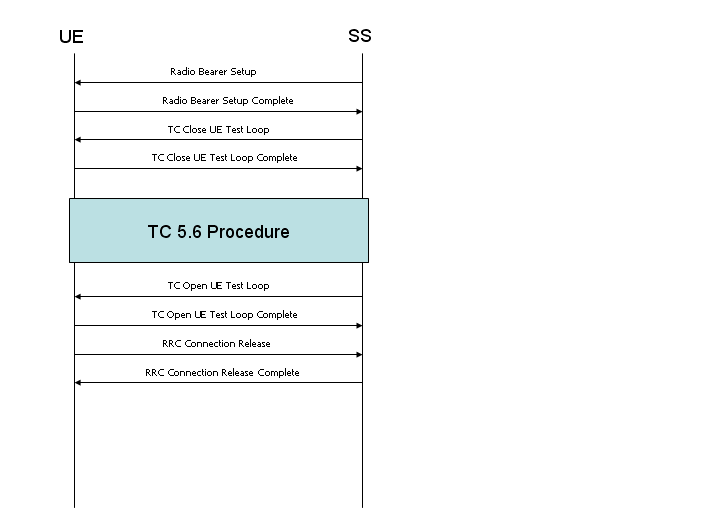
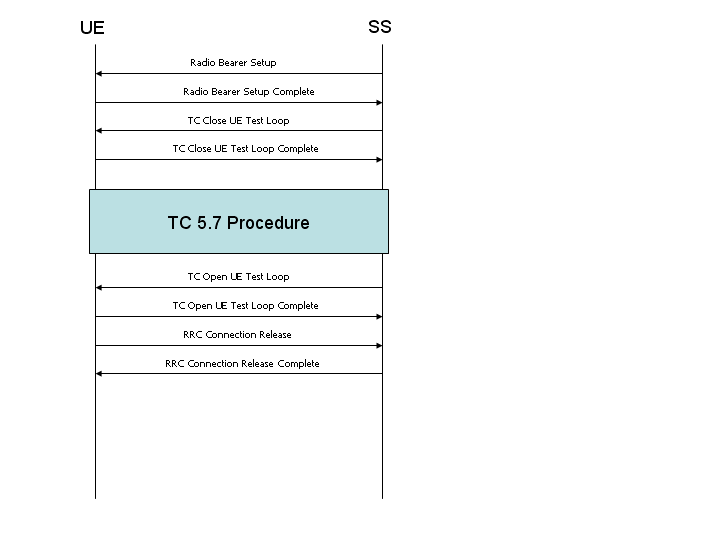

In this page, I will try to describe UMTS RF measurement procedure ( Purpose, Meaning of the test, Interpretation of the result) in my own language and in my understanding.
- 34.521 (RF Conformance) Test Case List
- HSet Definition Table
- Measurement Procedure
34.521 (RF Conformance) Test Case List
|
Chapter |
Description |
|
5 |
Transmitter Characteristics |
|
6 |
Receiver Characteristics |
|
7 |
Performance requirements |
|
8 |
Requirements for support of RRM |
|
9 |
Performance requirements for HSDPA |
|
10 |
Performance requirement (E-DCH) |
< 5. Transmitter Characteristics >
| Chap 5 | Transmitter Characteristics | Eq Config |
| 5.2 | Maximum Output Power | 1 |
| 5.2A | Maximum Output Power with HSDPCCH (Release 5 only) | 1 |
| 5.2AA | Maximum Output Power with HSDPCCH (Release 6 and later) | 1 |
| 5.2B | Maximum Output Power with HSDPCCH and EDCH | 1 |
| 5.2C | UE relative code domain power accuracy | 1 |
| 5.2D | UE Relative Code Domain Power Accuracy for HS-DPCCH and EDCH | 1 |
| 5.2E | UE Relative Code Domain Power Accuracy for HS-DPCCH and E-DCH with 16QAM | 1 |
| 5.3 | Frequency Error | 1 |
| 5.4 | Output Power Dynamics in Uplink | 1 |
| 5.4.1 | Open Loop Power Control in Uplink | 1 |
| 5.4.2 | Inner Loop Power Control in Uplink | 1 |
| 5.4.3 | Minimum Output Power | 1 |
| 5.4.4 | Outofsynchronisation handling of output power | 1 |
| 5.5 | Transmit ON/OFF Power | 1 |
| 5.6 | Change of TFC | 1 |
| 5.7 | Power setting in uplink compressed mode | CT |
| 5.7A | HSDPCCH (Rel6) | 1 |
| 5.7A | HSDPCCH Power Control (Rel7 and later) | 1 |
| 5.8 | Occupied Bandwidth (OBW) | 1 |
| 5.9 | Spectrum emission mask | 1 |
| 5.9A | Spectrum Emission Mask with HSDPCCH | 1 |
| 5.9B | Spectrum Emission Mask with EDCH | 1 |
| 5.1 | Adjacent Channel Leakage Power Ratio (ACLR) | 1 |
| 5.10A | Adjacent Channel Leakage Power Ratio (ACLR) with HSDPCCH | 1 |
| 5.10B | Adjacent Channel Leakage Power Ratio (ACLR) with EDCH | 1 |
| 5.11 | Spurious Emissions | 1,3 |
| 5.12 | Transmit Intermodulation Requires SG and SPA | 1,2,3 |
| 5.13 | Transmit Modulation | - |
| 5.13.1 | Error Vector Magnitude (EVM) | 1 |
| 5.13.1A | Error Vector Magnitude (EVM) with HSDPCCH (Rel6) | 1 |
| 5.13.1A | Error Vector Magnitude (EVM) with HSDPCCH (Rel7 and later) | 1 |
| 5.13.1AA | Error Vector Magnitude (EVM) and phase discontinuity with HSDPCCH | 1 |
| 5.13.1AAA | EVM and IQ origin offset for HS-DPCCH and E-DCH with 16 QAM | 1 |
| 5.13.2 | Peak code domain error | 1 |
| 5.13.2A | Relative Code Domain Error with HS-DPCCH | 1 |
| 5.13.2B | Relative Code Domain Error with HS-DPCCH and E-DCH | 1 |
| 5.13.2C | Relative Code Domain Error for HS-DPCCH and E-DCH with 16QAM | 1 |
| 5.13.3 | UE phase discontinuity | 1 |
| 5.13.4 | PRACH preamble quality | 1 |
< 6. Reciever Characteristics >
| Chap 6 | Receiver Characteristics | Eq Config |
| 6.2 | Reference Sensitivity Level | 1 |
| 6.2A | Reference Sensitivity Level for DC-HSDPA | 1 |
| 6.2B | Reference Sensitivity Level for DB-DC-HSDPA | CT |
| 6.3 | Maximum Input Level | 1 |
| 6.3A | Maximum Input Level for HSPDSCH Reception (16QAM) | 1 |
| 6.3B | Maximum Input Level for HS-PDSCH Reception (64QAM) | 1 |
| 6.3C | Maximum Input Level for DC-HSDPA Reception (16QAM) | 1 |
| 6.3D | Maximum Input Level for DC-HSDPA Reception (64QAM) | 1 |
| 6.3E | Maximum Input Level for DB-DC-HSDPA Reception(16QAM) | CT |
| 6.3F | Maximum Input Level for DB-DC-HSDPA Reception(64QAM) | CT |
| 6.4 | Adjacent Channel Selectivity (ACS) | 1,2 |
| 6.5 | Blocking Characteristics | 1,2 |
| 6.5A | Blocking Characteristics for DC-HSDPA | 1,2 |
| 6.5B | Blocking Characteristics for DB-DC-HSDPA | CT |
| 6.6 | Spurious Response | 1,2 |
| 6.6A | Spurious Response for DC-HSDPA | 1,2 |
| 6.6B | Spurious Response for DB-DC-HSDPA | CT |
| 6.7 | Intermodulation Characteristics | 1,2 |
| 6.7A | Intermodulation Characteristics for DC-HSDPA | 1,2 |
| 6.7B | Intermodulation Characteristics for DB-DC-HSDPA | CT |
| 6.8 | Spurious Emissions | 1,3 |
< 7. Performance Requirements >
| Chap 7 | Performance requirements | Eq Config |
| 7.2 | Demodulation in Static Propagation conditions | 1 |
| 7.3 | Demodulation of DCH in Multipath Fading Propagation conditions | 1,4 |
| 7.4 | Demodulation of DCH in Moving Propagation conditions Requires | 1,4 |
| 7.5 | Demodulation of DCH in BirthDeath Propagation conditions | 1,4 |
| 7.5A | Demodulation of DCH in high speed train condition | CT |
| 7.6 | Demodulation of DCH in downlink Transmit diversity modes | CT |
| 7.7 | Demodulation in Handover conditions | CT |
| 7.8 | Power control in downlink | CT |
| 7.9 | Downlink compressed mode | CT |
| 7.1 | Blind Transport format detection | CT |
| 7.11 | Demodulation of Paging Channel (PCH) | CT |
| 7.12 | Detection of Acquisition Indicator (AI) | CT |
| 7.12A | Detection of E-DCH Acquisition Indicator (E-AI) | CT |
| 7.13 | UE UL power control operation with discontinuous UL DPCCH transmission operation | CT |
| No | Equipment Type |
| 1 | Basic Call Box |
| 2 | Signal Generator |
| 3 | Spectrum Analyzer |
| 4 | Fading Simulator |
| CT | Full Conformance Test System |
For the details of each HSET, refer to 3GPP TS 25.101 Annex A.7.
|
HSDPA Set of Parameters |
Avg Info Bit Rate |
TTI |
No of HARQ Process |
SML per HARQ proc |
No Of Phy Ch Code |
| H-Set 1 (QPSK) | 534 kbps | 3 | 2 | 9600 | 5 |
| H-Set 1 (16QAM) | 777 kbps | 3 | 2 | 9600 | 4 |
| H-Set 2 (QPSK) | 801 kbps | 2 | 3 | 9600 | 5 |
| H-Set 2 (16QAM) | 1166 kbps | 2 | 3 | 9600 | 4 |
| H-Set 3 (QPSK) | 1601 kbps | 1 | 6 | 9600 | 5 |
| H-Set 3 (16QAM) | 2332 kbps | 1 | 6 | 9600 | 4 |
| H-Set 4 (QPSK) | 534 kbps | 2 | 2 | 7200 | 5 |
| H-Set 5 (QPSK) | 801 kbps | 1 | 3 | 9600 | 5 |
| H-Set 6 (QPSK) | 3219 kbps | 1 | 6 | 19200 | 10 |
| H-Set 6 (16QAM) | 4689 kbps | 1 | 6 | 19200 | 8 |
| H-Set 8 (64QAM) | 13252 kbps | 1 | 6 | 43200 | 15 |
| H-Set 8A (64QAM) | 13252 kbps | 1 | 6 | 43200 | 15 |
| H-Set 8_2 (64QAM) | 13252 kbps | 1 | 6 | 44000 | 15 |
| H-Set 12 (QPSK) | 60 kbps | 1 | 6 | 3200 | 1 |
| Category 6,Max. | 3649 kbps | 1 | 6 | 11200 | 5 |
| Category 8,Max. | 7205.5 kbps | 1 | 6 | 22400 | 10 |
| Category 9,Max. | 10125.5 kbps | 1 | 6 | 28800 | 15 |
| Category 10,Max. | 13676 kbps | 1 | 6 | 28800 | 15 |
| Category 13,Max. | 17640 kbps | 1 | 6 | 43200 | 15 |
| Category 14,Max | 21096 kbps | 1 | 6 | 43200 | 15 |
| Category 14,20M | 20352 kbps | 1 | 6 | 43200 | 15 |
|
Category 22,Max. |
27952 kbps |
1 | 6 |
28800 |
15 |
|
Category 24,Max. |
42192 kbps |
1 | 6 |
43200 |
15 |
5.2B Maximum Output Power with HS-DPCCH and E-DCH
This test is to test HSUPA Max Tx power while UE transmit UL DPCCH, HS-DPCCH, E-DPCCH, E-DPDCH, but for this UE has to meet the following criteria.
i) UE TX power should not go higher than MAX UE Power (Max Allowed UE Power)
ii) UE has to be able to change E-TFCI value to keep its total power under MAX UE power.
iii) UE should use the Maximum possible E-TFCI in any condition.
Following plot is to show a overall procedure for [subtest 1], but other subtests are also working in similar way. Only specific TFCI condition and Power Offset conditions are different. Here you see 5 steps but only the first step and last step is fixed and other steps between them is for adjusting the measurement conditions. so number of steps between the first and last step may vary depending on situation or UE.
Step 1 : Equipment send TPC commands so that UE maitains the TX power way below than the MAX UE Power (MAX allowed UE power). In this case, UE is using the largest E-TFCI since the space between current TX power and Max UE power is large enough to accommodate the E-TFCI.
Step 2 : Equipement send TPC UP command and UE sets DPCCH power incremented by 1 dB, but there is still enough space from MAX UE power. So UE is using the Max E-TFCI.
Step 3 : Equipement send TPC UP command and UE sets DPCCH power incremented by 1 dB, but there is barely enough space from MAX UE power. So UE is still using the Max E-TFCI.
Step 4 : Equipement send TPC UP command and UE sets DPCCH power incremented by 1 dB, but now the space from MAX UE power is not enough to accommodate the Max E-TFCI. So UE select a little lower TFCI which can be accommodated by the remaining power space.
Step 5 : Now Equipment send TPC DOWN command and UE sets DPCCH power decremented by 1 dB and this would give back the enough power space to accommodate the MAX E-TFCI and UE select the MAX E-TFCI again. And the equipment measure total TX power at this step and use it as pass/fail criteria.
[Common Configuration]
1. Set DPCH Timing Offset = 6
2. Set Maximum Allowed UL TX Power = 21.0 dBm.
3. Set HSUPA TTI = 10ms and Modulation = QPSK
4. Set HS-DPCCH as follows.
- CQI Feedback Cycle = 4 ms
- Ack-Nack Repetition Factor = 3
- CQI Repetition Factor = 2
5. Set TPC Algorithm = Algorithm 2
6. Select Fixed Reference Channel H-Set1 (QPSK)
[Subtest1]
1. Set Delta CQI = 8
2. Set Absolute Grant = 12
3. Set E-TFCI As follows.
|
Number of E-TFCI = 5 |
|
|
|
|
E-TFCI = 11 |
E-TFCI PO = 4 |
|
|
E-TFCI = 67 |
E-TFCI PO = 18 |
|
|
E-TFCI = 71 |
E-TFCI PO = 23 |
|
|
E-TFCI = 75 |
E-TFCI PO = 26 |
|
|
E-TFCI = 81 |
E-TFCI PO = 27 |
4. Set Beta C, Beta D, Delta ACK, Delta NAC, Delta CQI, Delta E-DPCCH as follows. (Note : This is to meet 34.121 Table C 11.1.3 requirement. Delta ACK, Delta NAC, Delta CQI are set in such way that HS-DPCCH is being transmitted with a flat power)
- Beta C = 10
- Beta D = 15
- Delta ACK = 8
- Delta NACK = 8
- Delta CQI = 8
- Delta E-DPCCH = 6
5. Send TPC so that UE transmit power is 16 dBm (which is lower than it's max power by 7.5 dB) and maintain the same power.
6. Wait 150 ms until the UE power becomes 16.0 dBm.
7. Do HSUPA Throughput measurement and confirm the E-TFCI measurement result is 75.
8. TPC_cmd = +1 and wait 150 ms.
9. Do HSUPA Throughput measurement and confirm the E-TFCI measurement result is 75.
10. Repeat step 8 to 9 until the E-TFCI measurement result is not 75.
11. TPC_cmd = -1
12. Do HSUPA Throughput measurement and confirm the E-TFCI measurement result is 75 again.
13. TPC_cmd = -1 and wait 150 ms.
14. Do HSUPA Throughput measurement and confirm the E-TFCI measurement result is 75.
15. Repeat step 13 to 14 until the E-TFCI measurement result is not 75.
16. Measure the UE Tx power and check if it is +24dBm (Tolerance +1.7/6.7 dB).
[Subtest2]
1. Set Delta CQI = 8
2. Set Absolute Grant = 20
3. Set E-TFCI As follows.
|
Number of E-TFCI = 5 |
|
|
|
|
E-TFCI = 11 |
E-TFCI PO = 4 |
|
|
E-TFCI = 67 |
E-TFCI PO = 18 |
|
|
E-TFCI = 71 |
E-TFCI PO = 23 |
|
|
E-TFCI = 75 |
E-TFCI PO = 26 |
|
|
E-TFCI = 81 |
E-TFCI PO = 27 |
4. Set Beta C, Beta D, Delta ACK, Delta NAC, Delta CQI, Delta E-DPCCH as follows. (Note : This is to meet 34.121 Table C 11.1.3 requirement. Delta ACK, Delta NAC, Delta CQI are set in such way that HS-DPCCH is being transmitted with a flat power)
- Beta C = 6
- Beta D = 15
- Delta ACK = 8
- Delta NACK = 8
- Delta CQI = 8
- Delta E-DPCCH = 6
5. Send TPC so that UE transmit power is 16 dBm and maintain the same power.
6. Wait 150 ms until the UE power becomes 14.0 dBm.
7. Do HSUPA Throughput measurement and confirm the E-TFCI measurement result is 67.
8. TPC_cmd = +1 and wait 150 ms.
9. Do HSUPA Throughput measurement and confirm the E-TFCI measurement result is 67
10. Repeat step 8 to 9 until the E-TFCI measurement result is not 67.
11. TPC_cmd = -1
12. Do HSUPA Throughput measurement and confirm the E-TFCI measurement result is 67 again.
13. TPC_cmd = -1 and wait 150 ms.
14. Do HSUPA Throughput measurement and confirm the E-TFCI measurement result is 67.
15. Repeat step 13 to 14 until the E-TFCI measurement result is not 67.
16. Measure the UE Tx power and check if it is +23dBm (Tolerance +2.7/5.2 dB).
[Subtest3]
1. Set Delta CQI = 8
2. Set Absolute Grant = 15
3. Set E-TFCI As follows.
|
Number of E-TFCI = 2 |
|
|
|
|
E-TFCI = 11 |
E-TFCI PO = 4 |
|
|
E-TFCI = 92 |
E-TFCI PO = 18 |
4. Set Beta C, Beta D, Delta ACK, Delta NAC, Delta CQI, Delta E-DPCCH as follows. (Note : This is to meet 34.121 Table C 11.1.3 requirement. Delta ACK, Delta NAC, Delta CQI are set in such way that HS-DPCCH is being transmitted with a flat power)
- Beta C = 15
- Beta D = 9
- Delta ACK = 8
- Delta NACK = 8
- Delta CQI = 8
- Delta E-DPCCH = 6
5. Send TPC so that UE transmit power is 15 dBm
6. Wait 150 ms until the UE power becomes 15.0 dBm.
7. Do HSUPA Throughput measurement and confirm the E-TFCI measurement result is 92.
8. TPC_cmd = +1 and wait 150 ms.
9. Do HSUPA Throughput measurement and confirm the E-TFCI measurement result is 92
10. Repeat step 8 to 9 until the E-TFCI measurement result is not 92.
11. TPC_cmd = -1
12. Do HSUPA Throughput measurement and confirm the E-TFCI measurement result is 92 again.
13. TPC_cmd = -1 and wait 150 ms.
14. Do HSUPA Throughput measurement and confirm the E-TFCI measurement result is 92.
15. Repeat step 13 to 14 until the E-TFCI measurement result is not 92.
16. Measure the UE Tx power and check if it is +23dBm (Tolerance +2.7/5.2 dB).
[Subtest4]
1. Set Delta CQI = 8
2. Set Absolute Grant = 17
3. Set E-TFCI As follows.
|
Number of E-TFCI = 5 |
|
|
|
|
E-TFCI = 11 |
E-TFCI PO = 4 |
|
|
E-TFCI = 67 |
E-TFCI PO = 18 |
|
|
E-TFCI = 71 |
E-TFCI PO = 23 |
|
|
E-TFCI = 75 |
E-TFCI PO = 26 |
|
|
E-TFCI = 81 |
E-TFCI PO = 27 |
4. Set Beta C, Beta D, Delta ACK, Delta NAC, Delta CQI, Delta E-DPCCH as follows. (Note : This is to meet 34.121 Table C 11.1.3 requirement. Delta ACK, Delta NAC, Delta CQI are set in such way that HS-DPCCH is being transmitted with a flat power)
- Beta C = 2
- Beta D = 15
- Delta ACK = 8
- Delta NACK = 8
- Delta CQI = 8
- Delta E-DPCCH = 5
5. Send TPC so that UE transmit power is 16 dBm and maintain the same power.
6. Wait 150 ms until the UE power becomes 14.0 dBm.
7. Do HSUPA Throughput measurement and confirm the E-TFCI measurement result is 71.
8. TPC_cmd = +1 and wait 150 ms.
9. Do HSUPA Throughput measurement and confirm the E-TFCI measurement result is 71
10. Repeat step 8 to 9 until the E-TFCI measurement result is not 71.
11. TPC_cmd = -1
12. Do HSUPA Throughput measurement and confirm the E-TFCI measurement result is 71 again.
13. TPC_cmd = -1 and wait 150 ms.
14. Do HSUPA Throughput measurement and confirm the E-TFCI measurement result is 71.
15. Repeat step 13 to 14 until the E-TFCI measurement result is not 71.
16. Measure the UE Tx power and check if it is +22dBm (Tolerance +3.7/5.2 dB).
[Subtest5 upto v8.7.0]
1. Set Delta CQI = 8
2. Set Absolute Grant = 21
3. Set E-TFCI As follows.
|
Number of E-TFCI = 5 |
|
|
|
|
E-TFCI = 11 |
E-TFCI PO = 4 |
|
|
E-TFCI = 67 |
E-TFCI PO = 18 |
|
|
E-TFCI = 71 |
E-TFCI PO = 23 |
|
|
E-TFCI = 75 |
E-TFCI PO = 26 |
|
|
E-TFCI = 81 |
E-TFCI PO = 27 |
4. Set Beta C, Beta D, Delta ACK, Delta NAC, Delta CQI, Delta E-DPCCH as follows. (Note : This is to meet 34.121 Table C 11.1.3 requirement. Delta ACK, Delta NAC, Delta CQI are set in such way that HS-DPCCH is being transmitted with a flat power)
- Beta C = 14
- Beta D = 15
- Delta ACK = 8
- Delta NACK = 8
- Delta CQI = 8
- Delta E-DPCCH = 7
5. Send TPC so that UE transmit power is 16 dBm and maintain the same power.
6. Wait 150 ms until the UE power becomes 16.0 dBm.
7. Do HSUPA Throughput measurement and confirm the E-TFCI measurement result is 81.
8. TPC_cmd = +1 and wait 150 ms.
9. Do HSUPA Throughput measurement and confirm the E-TFCI measurement result is 81
10. Repeat step 8 to 9 until the E-TFCI measurement result is not 81.
11. TPC_cmd = -1
12. Do HSUPA Throughput measurement and confirm the E-TFCI measurement result is 81 again.
13. TPC_cmd = -1 and wait 150 ms.
14. Do HSUPA Throughput measurement and confirm the E-TFCI measurement result is 81.
15. Repeat step 13 to 14 until the E-TFCI measurement result is not 81.
16. Measure the UE Tx power and check if it is +24dBm (Tolerance +1.7/6.7 dB).
[Subtest5 since v8.8.0]
1. Set Delta CQI = 8
2. Set Absolute Grant = 12
3. Set E-TFCI As follows.
|
Number of E-TFCI = 1 |
|
|
|
|
E-TFCI = 67 |
E-TFCI PO = 18 |
4. Set Beta C, Beta D, Delta ACK, Delta NAC, Delta CQI, Delta E-DPCCH as follows. (Note : This is to meet 34.121 Table C 11.1.3 requirement. Delta ACK, Delta NAC, Delta CQI are set in such way that HS-DPCCH is being transmitted with a flat power)
- Beta C = ?
- Beta D = ?
- Delta ACK = 0
- Delta NACK = 0
- Delta CQI = 0
- Delta E-DPCCH = 0
- minimum set of E-TFCI = 67
5. Send TPC so that UE transmit power is 16 dBm and maintain the same power.
6. Wait 150 ms until the UE power becomes 16.0 dBm.
7. Send TPC ALL 1 so that UE transmit power is its Max power.
8. Wait 150 ms until the UE power becomes its Max Power.
9. Measure the UE Tx power and check if it is +24dBm (Tolerance +1.7/6.7 dB).
5.2C UE Relative Code Domain Power Accuracy (Release 6 and later)
Even when total UE TX power stay constant, each component physical channel power should vary dynamically depending on the channel composition. The component of Uplink transmission signal with HSDPA environment are as follows :
- U DPCCH
- U DPDCH
- HS-DPCCH
Once connection is made, U DPCCH + U DPDCH is always being transmitted, but HS-DPCCH transmission varies depending on configuration. For example, when there is no HS-DPCCH being transmitted, DPCCH + DPDCH power would increase to fill the power space where HS-DPCCH used to take up and when there is HS-DPCCH being transmitted, DPCCH + DPDCH power would decrease to make enough space for the HS-DPCCH to fill in.
Even when the composition of Uplink power is same, the portions of the power for each channel can vary with the following configuration.
- Beta C
- Beta D
- Delta ACK
- Delta NACK
- Delta CQI
- CQI Feedback Cycle
- ACK/NACK Repetition Factor
- CQI Repetition Factor
Depending on the factors described above, uplink power profile in the time domain may look as follows. This test cases measures each of the channel power at the following four points depending on each subtest configuration. (The point labeled (1), (2), (3), (4) is the point where the power is measured).
The reason why the Transmit Power Profile become like this can be illustrated as follows.
Following is the measurement result for each subtest. Each bar represents the relative power for each component channels (DPCCH, DPDCH, HS-DPCCH)

5.4.1 Open Loop Power Control in the Uplink

5.7 Power setting in uplink compressed mode

The transmission of Ack/Nack or CQI over the HS-DPCCH may cause the transmission power in the uplink to vary and the ratio of the amplitude between the DPCCH and the Ack/Nack and CQI respectively is signalled by higher layers
The nominal sum power on DPCCH+DPDCH is independent of the transmission of Ack/Nack and CQI, but if UE output power with HS-DPCCH(Ack/Nack or CQI) exceed the specified maximum value or it fall below the specified value, UE may apply additional scaling to the total transmit power as defined in transmission power requirement. As a result, the overal power profile when both DPCCH+DPDCH and HS-DPCCH are transmitted simultaneously can be very complicated as shown below.
This test is to verify that the changes in uplink transmit power when transmitting the HS-DPCCH (Ack/Nack and CQI) and the power between HS-DPCCH transmissions are within the allowed power step tolerances as specified.
To test this, this test case configure HS-DPCCH transmission pattern as follows.
As the first step, SS set TPC_cmd = 0 (no power up, nor power down of UL DPCCH) and measure the power changes at the points as shown below.
At the second step, SS send TPC_cmd = 1 and check the power steps at the points marked as below.